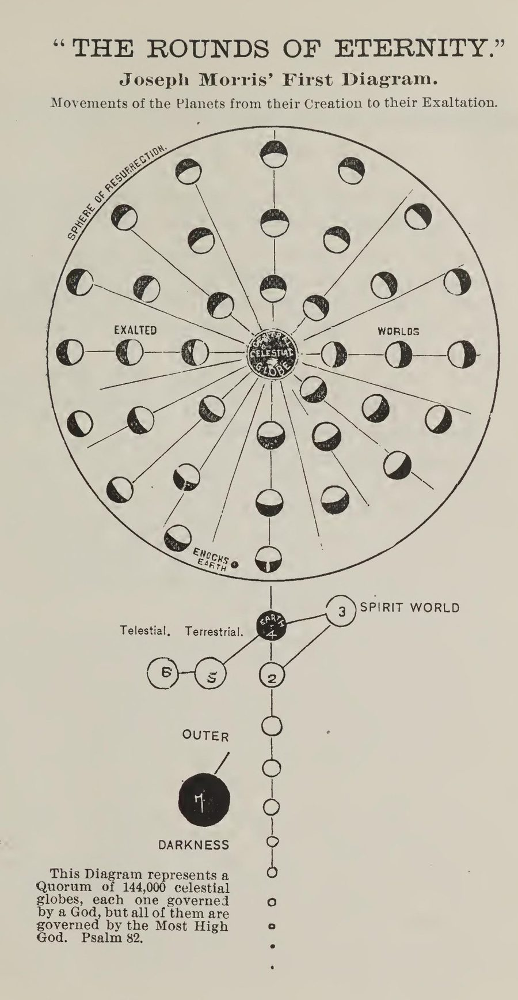
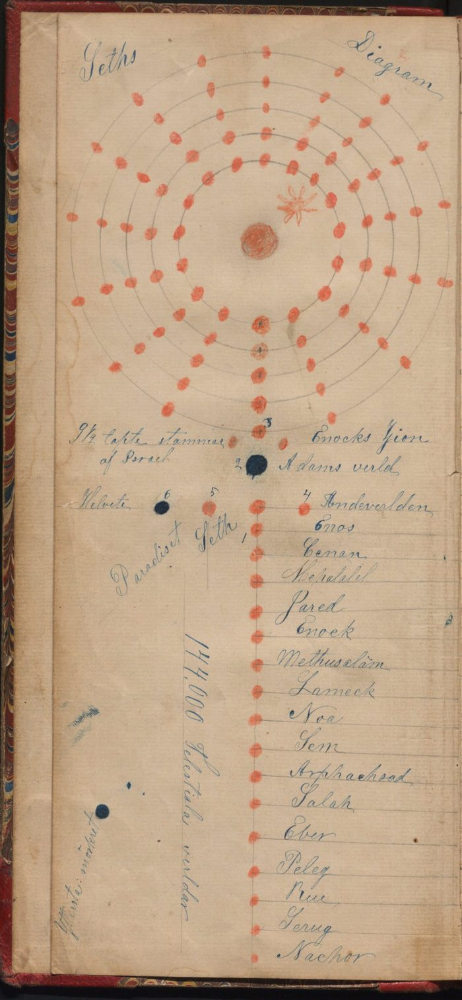

Morrisite.org › Teachings: Joseph Morris
Joseph Morris (1857–1862)
What Joseph Morris taught from his first revelation in 1857 to his death at Kington Fort in 1862: his calling and claims, the coming of Christ, consecration, reincarnation, the worlds, spiritual gifts, church order and marriage.
Part of Teachings: Joseph Morris · George Williams and the Montana church · Davies, the Doves and others · Looking for the coming
Joseph Morris (1857–1862)
A prophet with a message for Brigham Young
Morris, an English convert, believed the Lord spoke through him, and he recorded more than 300 revelations. His letters to Young, from 1858 to 1860, show him first offering to work with Young and then, as no answer came, growing desperate; he believed he had been called to lead the church (Watson, pp. 5, 11–49). A revelation of January 1860 charges Young with turning the Lord’s servant away from his door; a clerk docketed it “Balderdash” (see Documents and Did Brigham Young ever answer Morris?). His followers later claimed that church leaders drew on the revelations he had sent and presented them as “new truths” (Watson, p. 11, citing Dove’s preface). Richard W. Young, summarizing what former Morrisites told him in 1890, says Morris taught that the world was “a great creature that has been growing for millions of years,” that Christ would come to establish the kingdom “with Adam as the second in authority,” “the principle of heirship,” that he was “the re-incarnate spirit of Moses,” and that Joseph Smith was the sixth angel of the Revelation and he the seventh (The Contributor 11, no. 8 (June 1890): 282).
Moses, and Seth, the seventh angel
Morris claimed to be the reincarnation of Moses (Watson, p. 6); in a talk of 2026 Watson adds that Morris believed he had also been Seth, and that Joseph Smith had earlier been Enos and Elijah (Watson, Scriptural Mormonism, Ep. 113, November 14, 2026, at 21:47–22:26). He also taught an order of seven angels who preside over the last dispensations of each earth: Seth, Enos, Cainan, Mahalaleel, Jared, Enoch and Methuselah, with Seth, the seventh, presiding (“The Order of Sevens,” in Gems of Inspiration). Morris called himself the Seventh Angel; an informer heard him say so on May 12, 1861: “Moses could not reveal as much as I have … I say now I profess to be the Seventh Angel. The seventh thousand years is now ushered in” (“Doctrines of the Morrisites, May 12, 1861,” informer’s report, “Morrisite papers, 1861–1862,” Brigham Young office files, CR 1234 1, Church History Library), and George Williams’s writings call the prophet of South Weber “Seth” (Watson, p. 90). Both identities appear in the sources.
Two of his followers who later lived at Walla Walla, William W. Davies and R. J. Livingston, gave a fuller form in 1882: Morris declared himself “the spirit of Gabriel now occupying the body of Joseph Morris,” the same spirit that had been Seth, the son of Adam, and later Moses; and he said that John Banks, his strong right hand, carried the spirit of Hur, who with Aaron held up Moses’ hands in the battle with Amalek. Livingston added that Morris “never asserted that a spirit came the second time to complete an unfulfilled mission”; rather, that “the body could not be killed while its spirit mission was incomplete,” which, he said, was what caused such consternation when Morris was killed (Frank T. Gilbert, Historic Sketches of Walla Walla, Portland, 1882, pp. 371–73). These are recollections of twenty years later, from men who by then followed Davies’s own teaching of returning spirits.
Young Joseph and the Reorganization
A revelation of May 4, 1861, answered whether the Lord had anything to do with the new sect of “True Latter Day Saints” headed by Joseph Smith’s son. It said he did: he was using them as a scourge to the “false shepherds” of his flock and would in the end bring many of them to Morris. Joseph Smith III had not yet been called as a prophet; if he were, the call would come through Morris, who alone held the keys of the dispensation (The Spirit Prevails, No. 64, pp. 90–91). The Reorganization was already noticed at Weber. In December 1860 its True Latter Day Saints’ Herald printed an unsigned letter from Weber County saying that many there acknowledged “Brother Joseph’s” right to lead the church; the letter does not mention Morris (True Latter Day Saints’ Herald 1, no. 12 [December 1860]: 292). By July 1861 the Herald was answering Morris directly, with “An Address to Joseph Morris, the Great False Prophet of Weber Co., Utah,” and an editorial, “Civil War in Utah,” that quotes his revelation of May 25, 1861 (The Spirit Prevails, No. 68), though it dates it May 15. This is the earliest known printing of one of Morris’s revelations (True Latter Day Saints’ Herald 2, no. 5 [July 1861]: 108–15, 116–19).
Joseph Smith III read the same revelation to John Parson in January 1885, asking how he and others were to “become subject” to Morris’s organization if, as Parson said, Morris’s work was not to continue as a church; Smith wrote, “I urge nothing against Joseph Morris,” but “I neither attack his work nor accept it as binding on me” (Smith to Parson, January 25, 1885, Joseph Smith III Letter Press Book, P6, JSLB4, pp. 148–51, Community of Christ Library Archives). Several Morrisites later joined the Reorganized Church; see How and why did Morrisites join the RLDS Church?
Gods, angels and Holy Ghosts
In a revelation on the Holy Ghost, an early form of “Keys of the Priesthood” (The Spirit Prevails, No. 2), Morris taught that Holy Ghosts are men who once lived on a mortal earth, “millions” of them, made one as the Father and the Son are one, and that each god is subject to the one above him, up to “the first God of all” (Watson, pp. 50–53). Richard Cook explained it to six new members at their confirmation in May 1861: “The Holy Ghost is a redeemed being, one that existed in the world before this,” and such beings “are our guardian Angels,” so that each confirmed member was now “entitled to one of these redeemed beings a Holy Ghost” (“Doctrines of the Morrisites, May 12, 1861,” informer’s report, “Morrisite papers, 1861–1862,” Brigham Young office files, CR 1234 1, Church History Library). Forscutt later remembered the theology as monotheistic at its root but wide enough to find a place for the faithful of every religion (Forscutt, Sketch, pp. 17–18).
Who rules this world
Morris’s revelations explain the delays of 1861–62 partly by a law of jurisdiction among the gods. A revelation copied in June 1862, during the last days before the siege, says it is “unlawful” for Christ to cut off the Saints’ enemies directly, because the Father is not president over this world: “Adam is,” the “Loyal President over this Earth,” and “one god cannot controll another gods world,” but only through “Loyal Authority,” the one who holds its “Ruling Power”; the owner of a world commits that power to his firstborn “for one thousand years” (Joseph Morris Papers, P11-1 f1, pp. 215–16, Community of Christ Library Archives; not in The Spirit Prevails). The idea is older in the revelations: the catechism of 1859 says that Seth, ordained by Adam, “claims the ruling power over this planet” (The Spirit Prevails, No. 2), and a revelation of October 1861 says the twelve princes of Israel will claim it once the earth is celestialized (No. 117). The revelation of January 1, 1862, which says the dated promises had been “intended to fail,” speaks the same language: until a secret had been revealed it was “unlawful” for Christ to come, and afterwards “the Law compels me to come shortly” (P11-1 f1, pp. 250–51; see the timeline of the coming).
George A. Smith
The same catechism names the apostle George A. Smith as “the second born son of Adam,” a fallen angel, and an apostle only “in the same sense that Judas was, of whom Jesus said, ‘I have chosen you twelve and one of you is a devil’”; it teaches that the second-born son is the devil of each world, and that the fallen angels received their priesthood “By Cain; and Cain by Lucifer” (The Spirit Prevails, “Keys of the Priesthood,” p. 12). Forscutt adds that Morris claimed to have had Smith’s history revealed to him: he had been Cain, then Judas, and last “the moving spirit that planned the Mountain Meadow Massacre.” Forscutt called the theory of repeated embodiment “strange” but thought there were “several indices” of Smith’s guilt (Forscutt, Sketch, pp. 11–12; see also G. M. Howard, Utah Historical Quarterly 44, 1976). The printed revelations do not mention the massacre; the charge is known only from Forscutt.


The worlds
Eardley printed this diagram in 1899 as “Joseph Morris’ First Diagram” (above). A drawing in Josiah D. Price’s journal shows a central world ringed by smaller ones, with a column of worlds rising from it labeled with the patriarchs from Cainan upward (Josiah D. Price journal, 1858–1873, photocopy, P26-22 f1, Community of Christ Library Archives). An undated essay among Alexander Dow’s papers explains such a figure, which it calls the Plummet (Zechariah 4:10), as the eternal progression of worlds: the first God’s world at the center, the others rising through their spiritual, temporal and celestial estates, and this earth, which has grown and moved 144,000 times since its creation, among them (Joseph Morris Papers, P11-1 f6, Community of Christ Library Archives). It may be “the diagram” that Eardley in 1892 said Morris had come to reveal (see the Montana church, below), and the drawing labeled “Seth’s Diagram” that opens Williams’s record of letters, 1873–1879 (see Repositories). All three share one design: a circle of worlds around a central globe, with a line of worlds running down from it toward this earth and outer darkness.
A diagram was in use from the first months: on May 12, 1861, Cook gave the newly confirmed “an explanation of the diagram,” and in November 1861 Parson preached while “pointing at the diagram of the planets” (“Doctrines of the Morrisites, May 12, 1861,” informer’s report, “Morrisite papers, 1861–1862,” Brigham Young office files, CR 1234 1, Church History Library; “Remarks of Mr. Parsons,” November 24, 1861, same file). A Swedish copy of “some explanations of the diagram given by Joseph Morris, Weber 1861,” made by Emanuel Strom in 1872, numbers the worlds by their estates: the first estate (1); this earth in its mortal estate (2); the celestial world, where “the eternal Father and his Son Jesus and the whole heavenly family” dwell (3); the spirit world, which receives the spirits from all worlds (4); and two worlds marked 5 and 6, which stand still as stations for the spirits of the dead. “Joseph Smith is now in the Terrestrial world, and presides over the two last-named worlds.” A thousand years make one “eternal day,” and a ring of worlds forms “a quorum of 144,000,” matching the 144,000 John saw on Mount Zion; each world moves 144,000 times before it is glorified, standing still 7,000 years after each move (Record of epistles from Cainan, 1868–1872, pp. 55–57, Church History Library, MS 31876; translation from the Swedish generated by Claude).
The Eternal Rounds, 1899
In July 1899 two Latter-day Saint missionaries stayed with “Mr Petersons a Morisite” near Warm Springs, Montana, and “next morning they showed us through the Eternal Rounds” (John Welch, missionary journal, July 17–18, 1899, MS 29881, Church History Library, image 19). What they were shown is not described; being shown “through” it suggests a large chart or display of the diagram that Eardley printed the same year as “The Rounds of Eternity.” New


Reincarnation
Morris taught that spirits return to the earth in new bodies; Joseph Dove dated the teaching to a revelation of 1859, and Forscutt called it Morris’s “strange theory of repeated embodiment.” Strom’s Swedish copy of “an article given by Joseph Morris concerning the resurrection of Jesus Christ” explains the resurrection itself in the same way: it “takes place by birth, just as they are born into the first or second estate,” the spirits being “brought forth by immortal parents”; Christ rose on the third day in the body that was crucified only because his mission was “altogether different from Adam’s offspring” (Record of epistles from Cainan, 1868–1872, pp. 62–63, Church History Library, MS 31876; translation from the Swedish generated by Claude). This is close to the “baby resurrection” that Brigham Young rejected. In the 1880s the Doves made it the frame of their succession, with Morris as Moses and George Dove as Melchisedec, by the Herald’s accounts (see Other branches). Where the teaching came from is disputed: see Where did the Morrisite teaching of reincarnation come from? and the Glossary.
The Doves’ first book, 1879
George S. and James Dove’s A Voice from the West records some Weber teachings not in The Spirit Prevails. The sacrament had not been taken at Weber; it would be “as soon as twelve individuals can meet together under the covenant.” The half hour of silence in heaven (Revelation 8:1) meant twenty years, so that if Morris’s preparation began in 1859, a new one would begin in 1879. The apostles had tried in quorum to unfold the principle of the first- and second-born sons, and Abraham Taylor “sent down to Salt Lake City for some buttons to make a diagram on the table,” but it could not be unfolded then. Asked whether Morris ever ordained anyone to the Melchizedek priesthood, the Doves answer no: “He always said, ‘You are an heir with me, to the High Priesthood.’” On reincarnation they make Seth, in turn, Shem, Moses, Samuel and Zerubbabel, “Lastly He comes as Joseph Morris” (pp. 17–20, 39). The book ends with Joseph Taylor’s hymn “Thoughts of the Past,” on the baptisms in the Weber, the bowery, Foreshadowing Day and the June battle (p. [42]).
The coming of Christ, and consecration
Morris taught that Christ would come soon to deliver his people, and he tied the coming to the consecration of their property. On December 28, 1861, a revelation promised that the Lord would not delay once the people were prepared; on December 30 another promised that he would come “to-morrow morning” if those present consecrated all their property in the way appointed (The Spirit Prevails, Nos. 186 and 188–189, pp. 336–39). When the morning passed, a revelation of January 6, 1862, blamed those who had consecrated unwillingly, and one of January 11 refused to set another time (Nos. 195 and 199, pp. 350, 359); in February deliverance was promised after the people had taken an oath (No. 224, p. 419). Josiah D. Price recorded that the saints consecrated their property on December 30, 1861, and swore the oath to the kingdom on February 12, 1862, twelve at a time: the apostles, the high priests and the priests of Aaron, then their wives in the same order, and last the boys and girls, the order set by the revelation of January 25, 1862 (No. 209) (Josiah D. Price journal, 1858–1873, photocopy, P26-22 f1, Community of Christ Library Archives). Price also copied Welsh translations of the consecration revelation and the oath.
Revelations of January and April 1862 forbade using the property of “the rebellious” and forbade letting those who left take back what they had consecrated (Nos. 202 and 254, pp. 368, 490), the dispute that led to the writs and the siege. John Parson, speaking at South Weber in September 1861, set consecration against Brigham Young’s church, whose apostles, he said, had promised that land would not be monopolized and that all would have equal rights, and had not kept the promise (Watson, pp. 64–67). See How did believers survive failed prophecy?
Judgment
The revelations of 1861–62 also foretell judgment on the wicked. A revelation read at South Weber on September 29, 1861, says Christ will come “as a thief in the night” and as a refiner, and will destroy his enemies, among them the leaders of his former church (Watson, pp. 60–64; The Spirit Prevails, No. 104). In a tongue of June 8, 1862, the “3rd Captain of the Lord’s Host,” an angel from an earlier earth, told of a camp like Kington Fort whose faithful, at “the test,” killed the hypocrites among them, and whose prophet then enforced the law of God on pain of death (The Spirit Prevails, pp. 638–42; Watson, pp. 72–79). Watson reads such passages as showing that Morris expected human as well as divine agents of judgment, including against dissenters in his own community (Watson, p. 8); Anderson held that the judgment Morris foretold was God’s alone (Anderson, Revisited, pp. 108, 111).
Spiritual gifts
Speaking in tongues and their interpretation, and messages from angels, were part of worship at Kington Fort. An interpretation of June 7, 1862, taught that the gifts are given to mortals and cease only at the resurrection, when the faithful become angels who give them to others, and that they had left the older church because a council in Brigham Young’s house decided to put them down (Watson, pp. 70–72). See What became of the spiritual gifts?
Church order and ritual
Morris organized his church on April 6, 1861, at South Weber, with a First Council and apostles (Glossary). Scepters, a robe and crown, and Foreshadowing Day at Kington Fort on May 30, 1862, belong to its ritual life; what Morris taught they meant is little documented (Anderson, Revisited, pp. 116–17; see Where did the rituals come from?). One explanation survives: when Morris and his three chief officers rode as the four horsemen on May 1, 1862, the sword, the balances and the book were said to stand for judgment, justice and mercy (Josiah D. Price journal, 1858–1873, photocopy, P26-22 f1, Community of Christ Library Archives). High priests were ordained “according to birthright privilege” (form for ordaining high priests, September 9, 1860, copied in English and Welsh in the Josiah D. Price journal, 1858–1873, photocopy, P26-22 f1, Community of Christ Library Archives), and converts were baptized into the new church: the printed roll of 1886 lists 430 baptized in 1861–62. Members were confirmed by three men together, Morris, Cook and Parson in May 1861; in Montana in 1872 Margaret Thomas was reordained “as the Lady elect to preside over the Female Order” (minutebook, September 1872–January 1874, MS 32226) (“Doctrines of the Morrisites, May 12, 1861,” informer’s report, “Morrisite papers, 1861–1862,” Brigham Young office files, CR 1234 1, Church History Library).
A form “for ordaining an elect lady” signed by Morris and reported in September 1861 anoints the woman with consecrated oil “that thou mayest be an heiress of the Priesthood of Melchisedec” (report by Judson Stoddard, “Morrisite papers, 1861–1862,” Brigham Young office files, CR 1234 1, Church History Library). The rods of office were numbered and inscribed: copies taken from the originals on June 19, 1862, read “Behold! I am Hugh Park—even number five,” “John Eames, even number six” and “Daniel Smith—even number seven,” each standing “in the stead of” one of the “first born” sons of Adam, and Morris’s own: “I hold in my hand this emblem of power, unto which all the nations and Kingdoms of the Earth must Bow … I am Joseph Morris, President of the Melchisedec Priesthood” (“Morrisite prisoners, 1862 June,” Historian’s Office collected historical documents, CR 100 397, Church History Library). Two manuscript copies of Morris’s text survive among the Morrisites’ own papers, and the numbered rods use the same formula as the bishop’s robe that William Harris wore, presenting each bearer before “all mankind” as a ruler “over all Abraham’s seed” (Community of Christ Library Archives, P11-1 f6, and journal of Josiah D. Price, P26-22 f1).
Marriage
Later writers often say that Morris opposed plural marriage; Watson argues that he held it to be part of the heavenly order (Watson, pp. 7–8). Morris’s own article of June 4, 1861, explaining Joseph Smith’s revelation on celestial marriage, says something between the two: the biblical law of many wives and concubines was given for this life, “not being a celestial law,” and the kings and prophets who had many wives “can have but one sealed to them each for eternity” (The Spirit Prevails, pp. 651–52). The same article defines a concubine as a fallen spirit “of the seed of Cain.” In the Montana church in 1876 the term was used of members: the council heard that an excluded member had been called “a fallen spirit,” and a man who left the church that December complained that members called his wife one (council minutes, April 1 and December 3, 1876, Church History Library, MS 31876, Minutes, 1876; translation from the Danish generated by Claude). The 3rd Captain’s testimony calls polygamy true “in its proper time and place.” Morris did not authorize it at Kington Fort, treating it as belonging to a future time (Watson, p. 8 n. 8).
Some members came into the movement with plural households formed as Latter-day Saints: Moses Byrne, one of the six baptized on April 6, 1861, though soon “cast off,” joined with both his wives, Catherine Cardon (married 1854) and Anne Beus (married 1857), who are on the roll as Catherine and Ann Bryne and kept neighbouring households in the 1860 census; and South Weber tradition calls James Laird “a polygamist and Morrisite.” No source yet shows how Morris treated such households. Morris’s successor George Williams departed from his rule of one wife for eternity: while saying he had “never taught the doctrine or counselled the practice,” he kept the household he had formed as a Latter-day Saint, with Susannah and Louisa, and in 1871 taught that a high priest takes “one Daughter of each God” in the eternities (see George Williams). By 1899 the movement’s own history condemned polygamy outright (Gems of Inspiration). Outsiders had said as much earlier: John Codman, who met Morrisites at Soda Springs in 1873, described them as sectarians who “accept most of the Mormon faith, ruling out the practice of polygamy” (The Mormon Country, 1874, p. 97). These may be where the later tradition began.
The Doves’ California branch read Morris otherwise: in 1885 J. C. Clapp reported that they cited his revelation of February 3, 1862, to make plural marriage part of “the fulness of the gospel” (Saints’ Herald 32, December 19, 1885, p. 820), a reading the Montana church repudiated in the same year. Morris’s own marriage rite of August 1861 is a covenant “for time,” while only the prophet and prophetess were sealed “for time and all eternity” (The Spirit Prevails, Nos. 89 and 33). See What did Morris teach about marriage?
Cite this page: Rogers, Eric Paul, ed. “Teachings: Joseph Morris.” Morrisite.org. https://morrisite.org/teachings-morris.html. Add the date you consulted it.